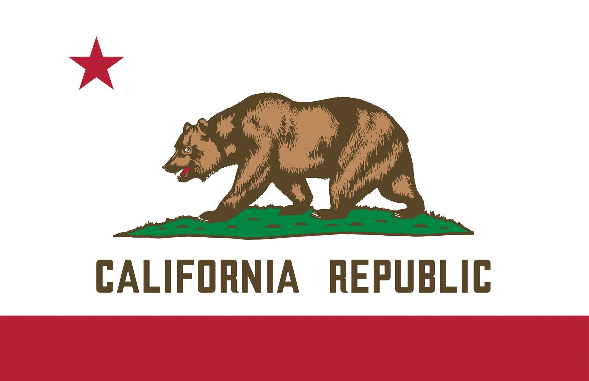

Scott Starkey
About Me
My name is Scott Starkey. I live in Roseville, California and work for the State of California. I enjoy hunting, fishing, camping and spending time with my wife and five children.

California, United States

California is the most populated state in the United States and is known for its diverse landscape, including mountains, forests, beaches and deserts. It has a strong economy driven by technology, agriculture, oil, entertainment and tourism. I enjoy living in California because it provides countless opportunities for outdoor activities such as hunting, fishing, camping and exploring.